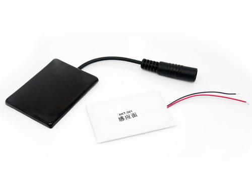
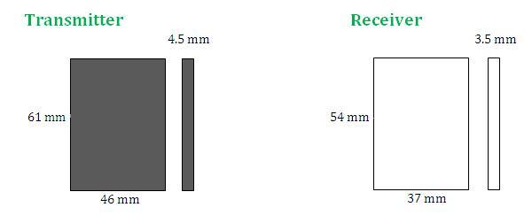
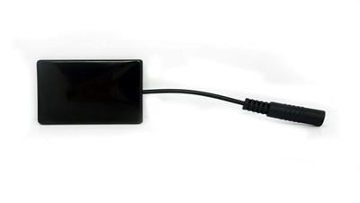
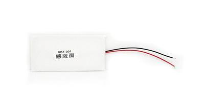
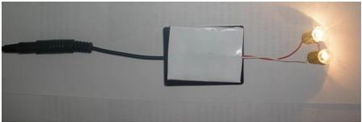
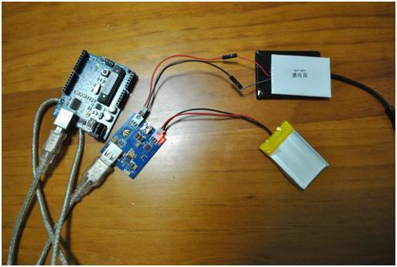

The Seeed Wireless Power Supply is a power transfer devise which can be used for close wireless charging or power supply. The module is composed of transmitter (black) and receiver (white) . The transmitter module runs off a 12Vdc power supply and uses the principle of electromagnetic induction to transmit converted power to the receiver module. The receiver module receives the power supply and outputs a stable 5Vdc at 300mA.
Model:POW114C1M


 
The transmitter module can simply be directly connected to a 12V power supply. The receiver module will receive power when it is within range of the transmitter module and outputs a stable output voltage. The receiver can then be directly connected to the load without any additional stabilizing circuitry.
The receiver module has two wires, the red wire is positive, and the white or black is negative. When connecting the receiver to a load, pay close attention to the polarity of the device. (i.e. Red wire to positive)
When in standby, the transmitter module outputs a low current, when charging the power automatically adjusts according to the load draw. The reciever can supply direct current to electronic devices like mobile phones.
Both modules can be built directly into most electronic projects.
The modules are slim, stable, save electricity and do not give off large amounts of heat.
Supply 5V battery directly from the receiver, just make sure to use the right polarity. NB: with this this module, you need to add a 4.2V stabilizing circuit if you want to charge [[|Lipo Rider|LiPo]] batteries.

You can use the Wireless Power Supply to charge LiPo batteries easily when connected up to the Seeedstudio Lipo Rider. Just connect the wireless charger to the solar JST connection and your battery to the battery connection. The Lipo Rider can be used to power the 5V needed to power most microcontrollers and can easily be connected to the Seeeduino via the usb connection. This would be the perfect setup for a wireless charging station for a mobile robot running on a LiPo battery .

Question 1: What is the minimal distance between the transmitter and the receiver?
Answer: The distance that it can provide stable 300 mA at 5V is about 0~10mm.
Question 2: May I have a wall (10 cm) between them? If so, does it still provide stable 300 mA at 5V?
Answer: Sorry it can't provide stable 300 mA at 5V with this long distance.
| Revision | Descriptions | Editor | Release Date |
|---|---|---|---|
| Wireless Power Supply v0.9b | Initial public release | Lafier | Nov 12, 2010 |
| Wireless Power Supply v0.9b | Reviewed and Info added | Rob | Dec 05, 2010 |
| Revision | Descriptions | Release Date |
|---|---|---|
| Wireless Power Supply v0.9b | Initial public release | Nov 12, 2010 |
Test Report of Wireless Power Supply.pdf
Click here to buy Wireless Power Supply ,or other products you like.
This documentation is licensed under the Creative Commons Attribution-ShareAlike License 3.0 Source code and libraries are licensed under GPL/LGPL, see source code files for details.
Copyright (c) 2008-2016 Seeed Development Limited (www.seeedstudio.com / www.seeed.cc)